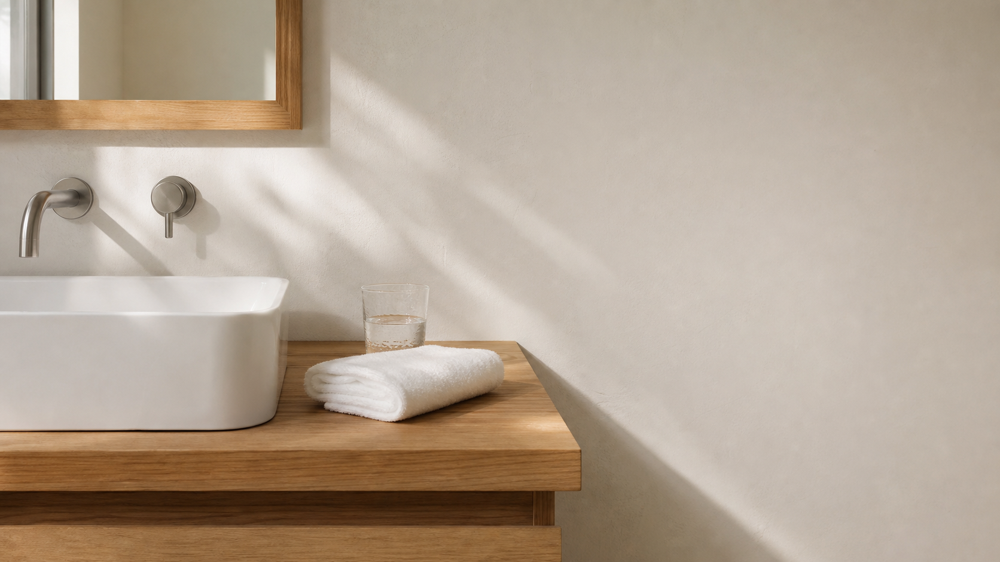
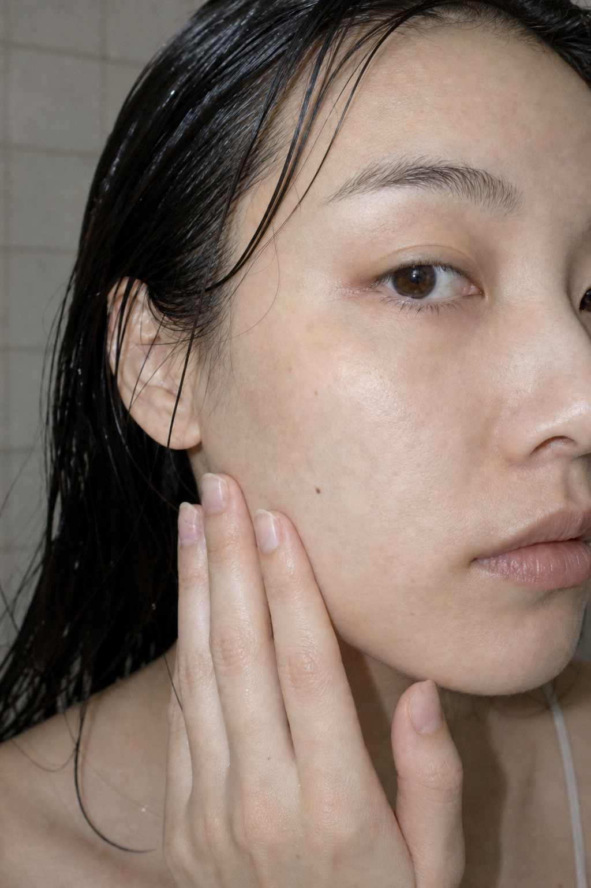

SUIRO JOURNAL / DAILY CARE
朝と夜、少量ずつ2回使う。
SUIRO 化粧水の使い方を、確認できている情報だけで整理します。
PRODUCT GUIDE
毎日の化粧水は、特別な演出よりも、何を・いつ・どう使うかが分かること。SUIROは朝と夜、少量を2回に分けてなじませる化粧水です。
- 種別
- 化粧水
- 内容量
- 150mL
- 価格
- 3,520円（税込）
- 香り
- 無香料
01 / MORNING
朝の洗面台で、
一度に多く取らない。
最初に少量を手に取り、顔へなじませます。そのあと、もう一度少量を取ります。

HOW TO
少量を取る。なじませる。
もう一度、同じ手順を。
- 1少量を手に取る
- 2顔へなじませる
- 3もう一度、少量を取る
- 42回目をなじませる
02 / NIGHT
夜も、手順は変えずに。
朝と夜のどちらも、SUIROを少量ずつ2回に分けて使います。香りを加えていない無香料の化粧水です。


03 / TEXTURE
水のように軽い使用感。
使用感は軽く、手のひらに少量ずつ取って使います。画像は使い方を示すイメージです。
一度の具体的な使用量は、現時点で表示していません。
A SIMPLE ROUTINE
朝と夜の使い方を、
ひとつの流れに。
洗面台で
少量を2回に分けて、顔へなじませます。
一日の終わりに
朝と同じ手順で、少量を2回使います。

決めているのは、朝と夜に使うこと。
少量を、2回に分けること。
PRODUCT INFORMATION
SUIRO
ESSENCE LOTION
- 商品種別
- 化粧水
- 内容量
- 150mL
- 価格
- 3,520円（税込）
- 香り
- 無香料
- 使用タイミング
- 朝・夜
- 使用方法
- 少量を2回に分けてなじませる
架空商品のデザイン確認用ページです。実際には購入できません。
EDITORIAL NOTE
確認できることだけを、
商品情報として掲載します。
このページでは、商品種別、内容量、価格、香り、使用タイミング、使用方法を掲載しています。確認できていない製品情報や販売条件は表示していません。
CONTENTS
この記事で紹介したこと
01朝の使い方少量を2回に分ける手順
02夜の使い方朝と同じ4つの流れ
03SUIROの商品情報150mL・3,520円（税込）・無香料